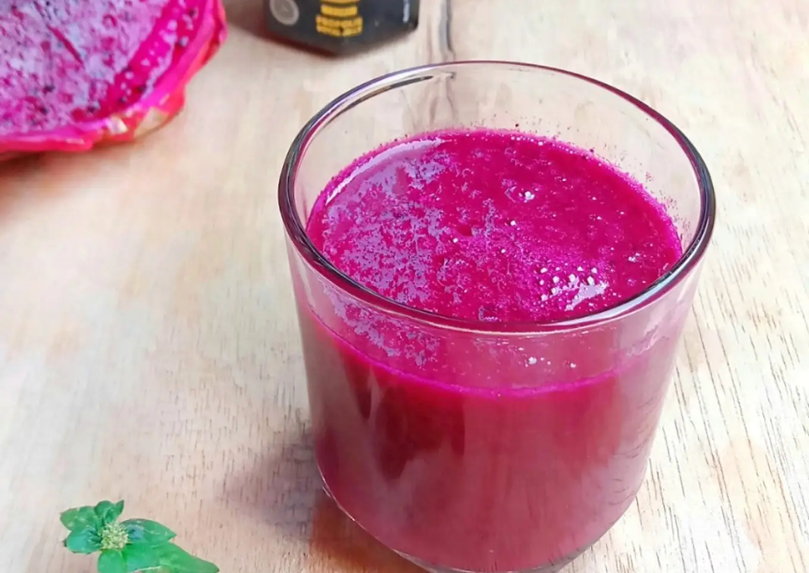

Just Buah Naga

Description
Jus Buah Naga
Ingredients :
- 100 gram buah naga merah
- 50 ml air matang/aku pakai air es
- 1/2 sdm madu/secukupnya
- Secukupnya es batu
Steps :
- Siapkan bahan-bahannya.
- Potong-potong buah naga, masukkan dalam tabung blender. Tambahkan air matang dan madu.
-
Blender sampai halus.
Tuangkan dalam gelas saji.
-
Tambahkan es batu. Sajikan segera.
Aku tanpa es batu, karna buah naga dalam keadaan dingin dari kulkas, plus air yang digunakan juga air es, jadi sudah cukup dingin dan segar 🙏